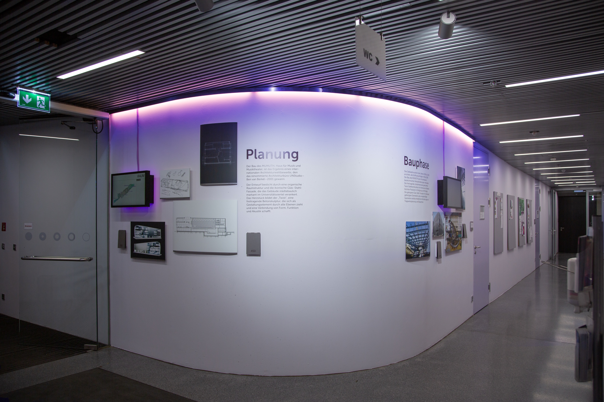
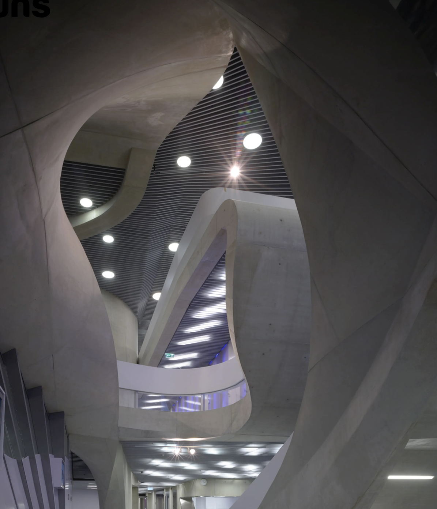

Mumuth
A small exhibition on the
making of a building
Client
University of Music and Performing Arts Graz (KUG)
Team
Julia Pfäfflin, Lenja Kausch
Context
Competition, 1st prize, built
My role
Concept, design and production, together with Julia Pfäfflin

Concept and Idea

The MUMUTH is the University of Music and Performing Arts Graz's building for music and music theatre. The university wanted to present the building better and asked for a small exhibition in the entrance area about how it came to be. Julia Pfäfflin and I entered the competition together, won it and then built the project.
We wanted the exhibition to fit into the building instead of standing out from it. That is why we worked with materials and colours that are already there: painted aluminium composite panels and a purple light that picks up the pale lilac walls of the entrance hall and the coloured light that plays across the glass in the building.


Final Concept
The exhibition tells the story of the building in three sections: planning, construction, and use and technology. Each section has its own set of photos on painted aluminium composite panels. A screen next to them adds moving images to each chapter. For the planning phase, it shows a video animation of the design. For the construction phase, it shows footage from the building site. And for use and technology, it shows recordings of performances in the finished building. Purple light connects the panels with the room, so the exhibition looks like part of the entrance hall rather than something added to it.